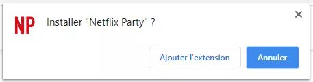
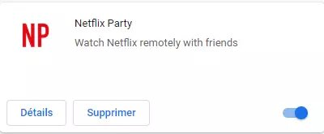
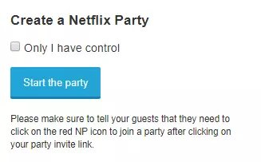
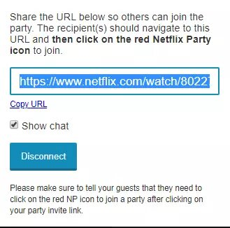
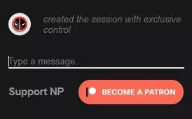
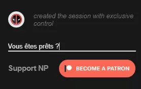
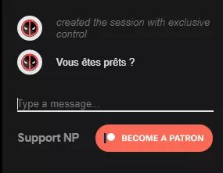
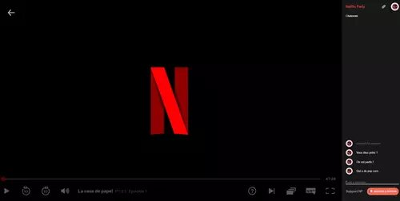

Regarder Netflix à plusieurs en même temps à distance avec Netflix Party
Netflix est incontestablement la plateforme de référence pour regarder légalement des vidéos en streaming, avec un large choix de films, de séries et de documentaires, même si des services concurrents comme Amazon Prime Video ou le tout nouveau Disney+ ont de sérieux arguments pour se faire également une belle place au soleil sur nos écrans. Avec les mesures de confinement mises en place pour limiter la pandémie de Covid-19, les services de vidéo à la demande sur abonnement (SVOD) connaissent d'ailleurs un succès grandissant, confinement oblige. Mais s'il est toujours possible de regarder un film ou une série en famille, à la maison et sur le même écran, il n'est pas question en ce moment d'inviter des amis pour une grande soirée de binge watching en enchaînant les vidéos jusqu'à saturation. Il existe toutefois une solution simple et gratuite pour partager un bon moment avec des proches en regardant Netflix en même temps à plusieurs et à distance, histoire, par exemple, de profiter de la sortie de la nouvelle saison de La Casa de Papel avec vos amis ou de revoir l’intégrale d’Outlander. Il suffit pour cela d'utiliser Netflix Party, une extension pour navigateur Web – pour Google Chrome uniquement, pour le moment – permettant de regarder un programme sur plusieurs écrans de façon synchronisée, mais également de discuter en direct via une messagerie interne, de façon partager ses impressions... ou même de ou spoiler ses amis avant la fin d'un épisode ! Seules conditions profiter de cette fonction conviviale : utiliser Chrome, sur ordinateur ou sur mobile, et disposer d'un accès (payant) à Netflix, avec un compte propre ou un profil dans le cas d'un abonnement multi-écrans, l'utilisation de l'extension Netflix Party étant gratuite.
Télécharger et installer l’extension Netflix Party sur Google Chrome
- Connectez-vous sur le site Netflix Party depuis le navigateur Google Chrome, sur ordinateur ou sur mobile.
- Cliquez sur Netflix Party en haut à droite du site. Cela ouvre la page de l’extension Netflix Party sur Google Chrome.
- Cliquez sur Ajoutez à Chrome .
- Confirmez en cliquant sur Ajoutez l’extension dans la boîte de dialogue qui s’ouvre. 
- L’extension est désormais installée sur votre navigateur. Notez que vous pourrez la supprimer ultérieurement sur la page des extensions Chrome quand vous le souhaiterez, en cliquant simplement sur Supprimer dans le cadre réservé à Netflix Party. 
Partager une vidéo Netflix avec Netflix Party
- Toujours avec Google Chrome, connectez-vous à votre compte Netflix, avec votre identifiant et votre mot de passe.
- Cliquez sur le film ou l’épisode de série que vous souhaitez partager pour commencer la lecture, puis mettez la vidéo en pause.
- Cliquez sur l’icône NP en haut du navigateur, à droite de votre barre d’adresse. L’icône doit être rouge pour être cliquable : elle est grise si vous êtes encore dans le menu de Netflix, ou si votre navigateur est ouvert sur une autre page.
- Une boîte de dialogue s’ouvre sous l’icône NP. Cliquez sur Start the Party pour commencer à partager la vidéo. Vous pouvez également cocher la case Only I have control si vous souhaitez être la seule personne à pouvoir gérer la vidéo. 
- Le visionnage partagé et synchronisé s'effectue grâce à un lien (une URL) que vous devez transmettre aux autres participants. L’URL à partager s’affiche dans la nouvelle boîte de dialogue. Vous pouvez cliquer sur Copy URL juste en dessous du lien puis le coller dans un mails ou une discussion sur une messagerie en ligne par exemple. Cliquez ensuite en dehors de la boîte de dialogue pour la fermer quand vous n'en avez plus besoin. 
- Vous remarquez qu’une zone de discussion s’est ouverte sur la droite de votre vidéo Netflix. C’est là où vous allez pouvoir discuter avec les autres participants, en tapant un message tout en bas. Cliquez sur la zone prévue à cet effet, rédigez votre message puis tapez sur le bouton Entrée de votre clavier pour valider le message. 
- Pour rejoindre la diffusion, vos contacts doivent cliquer sur le lien qu'ils ont reçu. Une fois le lien ouvert, ils doivent cliquer sur le logo NP dans la page Netflix sur Chrome pour rejoindre automatiquement la Netflix Party.
- Il ne vous reste plus qu’à lancer la lecture de la vidéo pour la voir ensemble, en utilisant la messagerie interne pour discuter !


